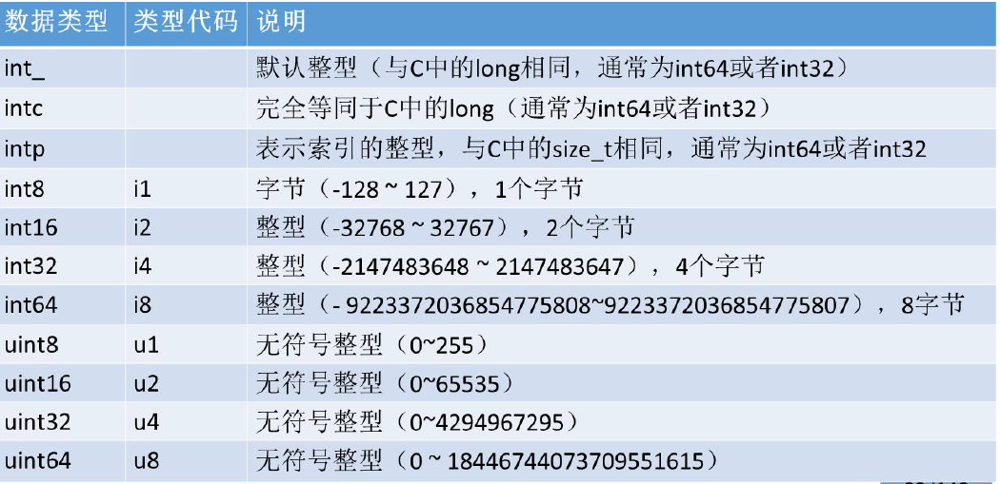
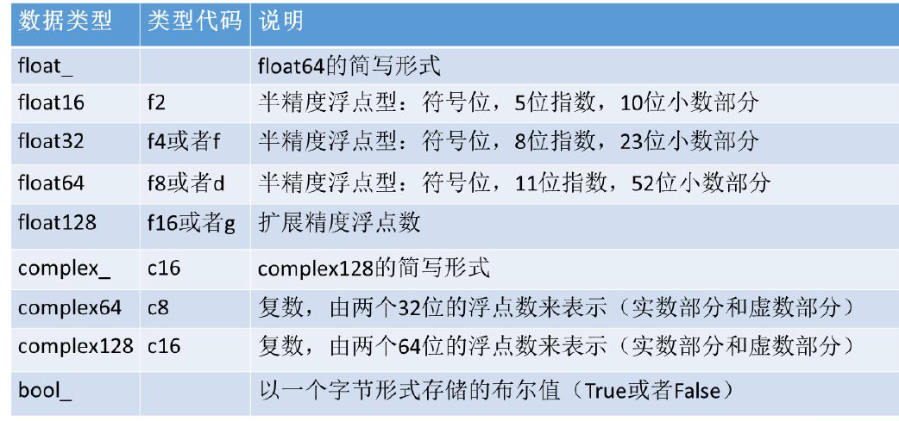
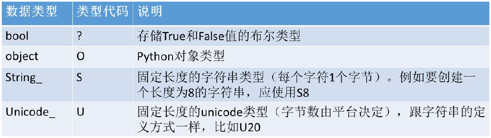

Numpy的介绍
1. Ndarray：N-dimensional array, N维数组
2. 一种由相同类型的元素组成的多维数组，元素数量是事先指定好的
例：建立Ndarray多维数组 ndarray父类实现矩阵的创建基本方式：
arr = np.array(
[
[1,2,3,4],
[2,3,4,5]
])
这是一个二维数组arr.ndim为2 这个数组的形状arr.shape为（2, 4）即2行4列
这个数组的元素个数np.size为8个，这个数组的数据类型arr.dtype为int32
shape属性-->几行几列
ndim属性-->几维度 向量-->1维度 矩阵-->二维度 数组-->3维度
size属性-->数组元素的个数
dtype-->元素类型
1 # 矩阵的定义
2 import numpy as np
3 b = np.array([[1,2,3,4], [2,3,4,5]])
4 print(b)
5 print(type(b))
6
7 # 矩阵的性质几行几列
8 print('shape',b.shape) # (2,4)
9 # 几维度 向量-->1维度 矩阵-->二维度 数组-->3维度
10 print(b.ndim) # 2
11 # 元素类型
12 print(b.dtype) # int32
13 # 数组元素的个数
14 print(b.size) # 8 => 2*4 3. 元素的数据类型由dtype(data-type)对象来指定，每个ndarray只有一种dtype类型
例：
np.array(['Python','cctv','ibeifeng','hello world'],dtype='|S4')
输出结果array([b'Pyth', b'cctv', b'ibei', b'hell'], dtype='|S4')
其中S4中的S表示字符串型，4表示每个字符串长度为4，所以输出结果每个数组只有4个字符
arr3 = np.array(['1','2','3','4'],dtype='int') # 表明arr3为整型
# 输出array([1, 2, 3, 4])
arr3 = np.array(['1','2','3','4'],dtype='float') # 表明arr3为浮点型
# 输出array([1., 2., 3., 4.])
4. 大小固定，创建好数组时一旦指定好大小，就不会再发生改变
数组的形状可以方便的读取数字例如
arr1 = np.array([[[ 1, 2, 3, 4, 5],
[ 2, 3, 4, 5, 6],
[ 3, 7, 4, 5, 6],
[ 3, 1, 4, 6, 7]],
[[11, 2, 23, 54, 5],
[28, 32, 42, 53, 46],
[35, 27, 74, 55, 86],
[63, 61, 44, 64, 87]]])
这个数组的形状为（2,4,5）可以通过arr1[0][1][1]这个形式取到3
ndarray的常见创建方式
np.zeros((3,4)) 创建3行4列全为0的数组，且默认为float型
3. ones函数：创建指定长度或形状的全1数组
np.ones((3,4)，dtype=int) 创建3行4列全为1的整形数组，如果没有dtype=int，默认为float型
4. empty函数：创建一个没有任何具体值的数组（准确地说是一些未初始化的垃圾值）
np.empty((7,4)) 创建7行4列随机值数组，float型
ndarray的其他创建方式
1.arrange函数：类似与python的range函数，通过指定开始值、终值和步长来创建一维数组，注意数组不包括终值
np.arange(2,20,3)
# 输出 array([ 2, 5, 8, 11, 14, 17])
2. linspace函数：通过指定开始值、终值和元素个数来创建一维数组，可以通过endpoint关键字指定是否包括终值，缺省设置是包括终值，它创建的是等差数列
np.linspace(2,20,3) 包含20
# 输出 array([ 2., 11., 20.])
3.logspace函数：和linspace类似，但它创建的是等比数列
np.logspace(2,20,3)
# 输出 array([1.e+02, 1.e+11, 1.e+20])
4.使用随机数填充数组，即使用numpy.random模块的random()函数，数组所包含的元素数量由参数决定
np.random.random((2,3,4))
# 输出 array([[[0.40595225, 0.80061568, 0.16821289, 0.05557114],
[0.96146758, 0.81135374, 0.93132755, 0.11023897],
[0.79526355, 0.61563423, 0.78924163, 0.21849418]],
[[0.36029206, 0.883596 , 0.60343721, 0.38746385],
[0.92802328, 0.91256992, 0.61305594, 0.86444498],
[0.6619579 , 0.55846171, 0.37563522, 0.35721423]]])
np.random.random_sample()生成一位随机数
ndarry的shape属性巧算
np.arange(2,20,2).reshape((3,-1)) # -1 则会自动计算维度
# 输出 array([[ 2, 4, 6],
[ 8, 10, 12],
[14, 16, 18]])
总结：
NumPy中的数据类型
1. 创建NumPy数组时可以通过dtype属性显示指定数据类型，如果不指定，NumPy会自己推断出合适的数据类型，所以一般无需显示指定
arr2=np.arange(2,10,2)，无需指定可判断为int32型
2. astype方法，可以转换数组的元素数据类型，得到一个新数组
arr3 = arr2.astype('float') # 为float64型
# 输出array([2., 4., 6., 8.])
arr4 = arr2.astype('|U2') # 使用unicode编码，每个元素长度为2
# 输出array(['2', '4', '6', '8'], dtype='<U2')
3.数值型dtype的命名方式：一个类型名（比如int、float），后面接着一个用于表示各元素位长的数字
比如表中的双精度浮点值，即Python中的float对象，需要占用8个字节（即64位），因此该类型在NumPy中就记为float64
4.每种类型有一个相对应的类型代码，即简写方式，参照下面的表



改变ndarray的形状
1. 直接修改ndarray的shape值
2. 使用reshape函数，可以创建一个改变了尺寸的新数组，原数组的shape保持不变，但注意他们共享内存空间，
因此修改任何一个也对另一个产生影响，因此注意新数组的元素个数必须与原数组一样
arr=np.arange(20)
arr.reshape((4,5))
＃ 输出array([[ 0, 1, 2, 3, 4],
[ 5, 6, 7, 8, 9],
[10, 11, 12, 13, 14],
[15, 16, 17, 18, 19]])
reshape函数不会改变原来的ndarray，但是得到的新的ndarray是原数组的视图
视图
多个变量使用（指向）一个内存地址（空间）
对于ndarray的一些方法操作，首先区分是否会改变原变量，以此来判断是视图还是副本
副本
把原来的内容，重新复制（拷贝）了一份新的数据，放到新的内存地址（空间）
即使修改了其中一个变量的元素值，并不会影响另外一个变量
3. 当指定新数组某个轴的元素为-1时，将根据数组元素的个数自动计算此轴的长度
arr2=arr.reshape((2,-1))
＃ array([[ 0, 1, 2, 3, 4, 5, 6, 7, 8, 9],
[10, 11, 12, 13, 14, 15, 16, 17, 18, 19]])
NumPy基本操作
数组与标量、数组之间的运算
元素级运算
arr1=np.random.random((2,3))
arr2=np.arange(1,7).reshape(2,3) ＃arr2必须转换为２行３列才能和arr1进行加、减、
乘、除、幂运算
数组的矩阵积（matrix product）
1. 两个二维矩阵（多维数组即矩阵）满足第一个矩阵的列数与第二个矩阵的行数相同，那么可以进行矩阵乘法，即矩阵积不是元素级的运算
因为矩阵积是第一个矩阵的行与第二个矩阵的列相乘
f
a,b,c . g = a*f+b*g+c*h
(行) h
（列）
注意：矩阵积：第一个矩阵的列轴（水平的轴）要等于第二个矩阵的行轴（垂直的轴）